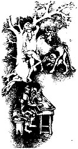
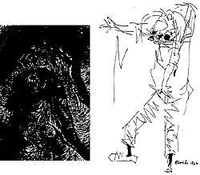

RESOURCES
< BACK
Contemporary African Sculpture in South Africa by E.J. de Jager:
Mhlaba Dumile (-Feni)
Mhlaba Zwelidumile Mxgasi Feni, better known simply as Dumile, is one of Africa's greatest contemporary artists. He was born in 1942 at Worcester in the Cape Province. According to other records he was born on 21 May 1939. After his mother's death in 1948 the family moved to Cape Town and later, when Dumile was about eleven years old, to Johannesburg. Here he worked for his father who was a trader and a preacher.
His talent was first noticed in 1964 while he was receiving treatment at the Charles Hurwitz SANTA Tuberculosis Hospital in Johannesburg, where he made drawings all over the walls of the centre. His exceptional, spontaneous and inherent talent was helped along by several persons who took an interest in the young Dumile. Ngatane gave him some instruction and also took him to the Jubilee Art Centre where he spent several weeks with Cecil Skotnes who introduced him to the medium of conte and helped him to develop his drawing techniques. He then went to live and work at the studio of Bill Ainslie where he also began his first sculptures. He was also greatly assisted by Madame Haenggi, from the then well known Gallery 101, Johannesburg, who also provided him with art materials.
In 1968 he went abroad and lived for many years in London in self-imposed exile. He occasionally visited the U.S.A., for example, when he went across as a visiting artist in residence at the African Humanities Institute, University of California at Los Angeles, 1979-1980. He later lived in New York until his death in 1991; where he designed record covers, book illustrations, etc. In his South African years he signed his work simply as ‘Dumile’, but later they were signed as ‘Mhlaba Dumile-Feni’.
Dumile was both a sculptor and an excellent draughtsman. His drawings in particular, have won him great acclaim. The content of these drawings were based on social realism, dealing chiefly with the social conditions and problems affecting the Black man's identity in the urban South African setting. He was exceedingly successful in finding powerful and original pictorial equivalents with which to express his deep emotional feelings on this subject.
His art is characterized by a distortion stemming from tremendous emotion, and to some extent his work belongs to the art of the fantastic. The drawings are characterized by great vitality, freedom from the limitations of reason, and the absence of any aesthetic pre-occupations. They were executed spontaneously, according to the artist's subconscious thoughts and vision. They are, nevertheless, comprehensible, and for the viewer infused with poignant significance.
The human figure is of prime importance in Dumile's drawings, as is the successful manner in which these figures give utterance to emotions and feelings. By means of posture, gestures, rhythm, in short, patterns of body configuration, these figures express inner and spiritual experiences. The appearance of the figures, and the distorted style in which they were drawn, fulfill a specific function, namely heightening the sensation of the emotions that they depict.

54 Father Teach Me How to Pray
1967
Conte Crayon on paper
193 x 90 cm
Dumile's art somehow culminated in his magnificent drawing African Guernica which is part of the collection of contemporary South African Black art at the University of Fort Hare. This drawing can be seen as almost autobiographical, reflecting his feelings and emotions as he expressed these in his art. Done in charcoal the drawing measures approximately two and a half meters by three meters. It must undoubtedly be one of the most expressive pieces of art to come out of contemporary indigenous Africa. The spontaneity and the passion and conviction with which it was executed is overwhelming.
Dumile's Guernica creates the impression of two vertical surfaces. The forward surface contains strongly drawn figures superimposed on a second surface containing vague figures of which, in some instances, there is only a suggestion. There is a complete lack of perspective and depth. The central dominating human figures are apocalyptic in appearance, precariously balanced on the backs of two cows. The distortion and contortion of these two figures, strongly dehumanized, heightens the sense of agony and horror. These figures ride onto the modern contemporary scene, the world in which we live, screaming their message of warning and doom. Everything about them, their twisted and grotesque bodies and limbs, demagogic eyes and contorted mouths, all proclaim their single propose, to protest in terms of horror, suffering and agony. A bleak, neurotic environment is created around these two figures, expressed by several solitary figures and groups of figures. Among these are two young people smoking marijuana (dagga), a white-collared minister of religion to whom nobody is paying any attention, a gambling table, a jazz-prophet playing his trumpet, a harlot lifting her dress and a child forsaken by its, mother and feeding from a cow. The drawing contains several cow figures, one of the oldest and most significant African ritual symbols. Several fowls and birds are also depicted. These animal figures seem to appear as archetypal symbols, arising spontaneously from Dumile's subconscious.

The Scream
1969
Conte crayon on paper
54 x 37 cm |
Agony
1966
Ink on paper
26 x 18 cm |
|
|
Untitled
1967
Conte crayon on paper
90 x 125 cm |
Mother and Child
n.d.
Conte crayon on paper
84 x 70 cm |
The drawing is a serious comment on the Black man's life in South Africa. The environment that Dumile created in the Guernica is that of township life and its cultural and social values, with which Dumile was very familiar. In this context, for example, the child feeding from the cow has more than one meaning. It is symbolic of mothers who through their social circumstances are forced to work and of others who forsake their children for the pleasures of city life. At the same time it is symbolic of the almost subconscious yearning for the past, a pastoral dimension of existence, which has been lost forever.
The Guernica transcends its immediate environment and becomes a reflection, a visual narrative of urban life and its ramifications. It bursts through all barriers of time and place, commenting seriously on the human dilemma and the social order. It shows the cruelty of man and what people do to each other. In an almost prophetic way Dumile anticipated and reflected in his art the violence that was to erupt in the Black townships in the late 1970s and the l980s.
Although it is his drawings that have won him the greatest acclaim, he also created a number of notable sculptures, of which the University of Fort Hare has four in its collection. These sculptures were executed in terra cotta and some have been cast in bronze. These sculptures testify to a spontaneous technique, often moulded by hand with great emotion and vitality. His sculptures are also characterized by distortion of form and in especially the busts so created, the facial features such as eyes and mouth, portray tremendous emotion and feeling. As with his drawings the content of his sculptures were strongly based on social realism, drawing chiefly from the social conditions and urban circumstances and environment of his fellow Blacks. His drawings and sculptures are, therefore closely related and very successfully complement one another.
Dumile can justly be regarded as one of the founders and most important exponents of the Township Art Movement. The greatness of Dumile's art lies in his ability to transcend his immediate environment into a universal reflection of human existence and suffering. This manifests his awareness of the link between art and life, beauty and violence, love and sorrow. Dumile's art is clearly involved with human rather than aesthetic problems. As such his art has a compelling quality, which draws the viewer again and again. The instinct of Dumile's art is apparent and he communicated his emotions and feelings in intelligible pictorial language and images.
Dumile's art is entirely original in concept and execution. He had a style very much his own, influenced and determined mainly by three factors, namely, that his drawings and sculptures were conceived in moments of intense emotion, that they were executed with passion and conviction, and that he was able to draw a spontaneous vitality from what appears to the viewer to be his subconscious mind.
Dumile has many one-man exhibitions to his credit. The first of these were held in 1966 at Gallery 101 in Johannesburg. He also exhibited at the Republic Festival Art Exhibition in 1966; as an invited artist at the Durban Art Gallery in 1966; the Transvaal Academy in 1967; the Grosvener Gallery, London, in 1969; the Contemporary African Art Exhibition at the Camden Centre, London in 1969; Gallery 21, London, in 1975, and numerous others. In 1967 he represented South Africa at the Sao Paulo Biennale. In 1966 Dumile won a merit award from the S.A. Breweries and in 1971 first prize with a bronze sculpture in an art competition sponsored by the African Arts Centre, University of California, Los Angeles. His work was included in the Contemporary African Art in South Africa Exhibition, works from the collection of the University of Fort Hare, that toured four major South African centres in 1979; the Black Art Today Exhibition held in Soweto 1981; The Neglected Tradition Exhibition held at the Johannesburg Art Gallery in 1988, and the Looking at Our Own: Africa in the Art of Southern Africa Exhibition at the Pretoria Art Museum in 1990. In 1988 Dumile had a one-man exhibition in New York and participated in the Voices from Exile Exhibition in which the work of seven South African artists toured the U.S.A.
Dumile's work has been acquired by the South African National Gallery in Cape Town, the Durban An Gallery and the Pretoria Art Museum, several University collections and many private collections. The University of Fort Hare in particular has a very fine collection of work from his South African period. Dumile's work is also represented in collections in the U.S.A., the United Kingdom, Sweden and Israel.
< BACK